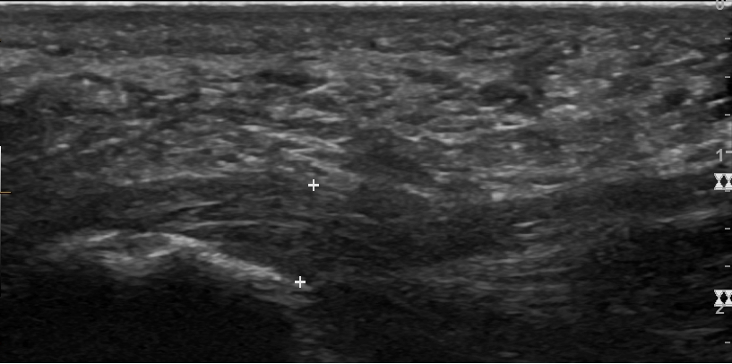

Ficha del catálogo
Fascitis plantar
- Sistema
- Óseo
- Modalidad
- US
- Región
- Pie
- Dificultad
- Básico
La fascitis plantar es la causa más frecuente de dolor en el talón del adulto y se debe a un proceso degenerativo por sobrecarga en la inserción de la fascia plantar en el calcáneo. Es típica en corredores, en personas que pasan muchas horas de pie y en pacientes con sobrepeso. El dolor es máximo con los primeros pasos de la mañana y mejora al caminar. La ecografía confirma el diagnóstico en pocos minutos y permite descartar otras causas de talalgia.
Técnica
Sonda lineal de alta frecuencia en el plano longitudinal de la fascia, con el paciente en decúbito prono y el pie en dorsiflexión, que tensa la fascia y mejora su definición.
Qué observar
- Engrosamiento de la fascia en su inserción calcánea, por encima de 4 mm
- Descenso de la ecogenicidad con pérdida del patrón fibrilar normal
- Comparación con el pie contralateral asintomático
- Ausencia de solución de continuidad completa, que indicaría rotura
- Espolón calcáneo, hallazgo asociado pero no responsable del dolor
- Líquido peritendinoso o alteración de la almohadilla grasa del talón
Hallazgos
Fascia plantar engrosada e hipoecoica en su inserción calcánea, con pérdida del patrón fibrilar y sin rotura completa.
Perlas
La comparación con el lado asintomático es más útil que fiarse solo del valor absoluto de grosor. El espolón calcáneo aparece con frecuencia en personas sin dolor, de modo que no debe informarse como la causa del cuadro.
Diagnóstico diferencial
- Rotura de la fascia plantar
- Discontinuidad de las fibras con colección hipoecoica en el defecto.
- Fractura por estrés del calcáneo
- Dolor a la compresión lateral con línea esclerótica en la radiografía o edema en resonancia.
- Atrapamiento nervioso del talón
- Dolor con características neuropáticas y fascia de grosor normal.
Simuladores
- Artefacto de anisotropía por sonda mal angulada
- Fascia engrosada asintomática en deportistas
- Almohadilla grasa atrófica del talón
Por modalidad
- US
- Método de elección por rapidez, comparación inmediata y bajo costo
- RM
- Muestra además edema del calcáneo y descarta otras causas de talalgia
- RX
- Solo aporta el espolón y descarta lesiones óseas
Protocolo
Ecografía longitudinal y transversal de la fascia con estudio comparativo. Resonancia cuando el dolor persiste pese al tratamiento o cuando se sospecha otra causa.
Clasificación
Errores frecuentes
- Angular mal la sonda y crear una falsa imagen hipoecoica
- Atribuir el dolor al espolón calcáneo
- No comparar con el pie contralateral

pie fascia plantar talalgia ecografia espolon calcaneo sobrecarga corredor